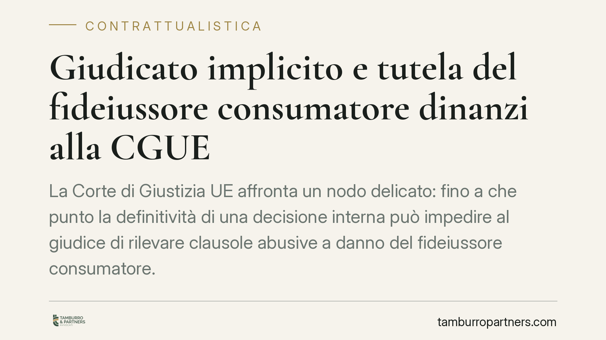

Giudicato implicito e tutela del fideiussore consumatore dinanzi alla CGUE
La Corte di Giustizia UE affronta un nodo delicato: fino a che punto la definitività di una decisione interna può impedire al giudice di rilevare clausole abusive a danno del fideiussore consumatore. Il tema tocca l'equilibrio tra certezza del diritto ed effettività della tutela garantita dalla direttiva 93/13/CEE, con ricadute dirette sui decreti ingiuntivi non opposti.

Che cos'è il giudicato implicito
Il giudicato implicito è la stabilità che una decisione acquista non solo su ciò che il giudice ha deciso espressamente, ma anche sulle questioni che costituiscono il presupposto logico-giuridico necessario della decisione, pur non esaminate in modo esplicito.
Esempio tipico: un decreto ingiuntivo non opposto diventa definitivo. In linea di principio copre, come antecedente logico, anche la validità delle clausole del contratto posto a fondamento del credito, pur se il giudice non le ha mai valutate. È proprio qui che nasce il problema con il diritto consumeristico europeo.
Il quadro normativo: direttiva 93/13 e recepimento interno
La direttiva 93/13/CEE impone agli Stati membri di assicurare che le clausole abusive nei contratti con i consumatori non vincolino questi ultimi. La Corte di Giustizia ha chiarito da tempo che il giudice nazionale deve rilevare d'ufficio il carattere abusivo di una clausola, quando dispone degli elementi di fatto e di diritto necessari (Pannon GSM, C-243/08, 2009).
Nell'ordinamento italiano la direttiva è recepita dagli artt. 33 e seguenti del Codice del Consumo (D.Lgs. 206/2005). L'art. 33 individua le clausole che determinano un significativo squilibrio a carico del consumatore; l'art. 36 ne sancisce la nullità di protezione, rilevabile d'ufficio e operante solo a vantaggio del consumatore.
Il precedente europeo sul giudicato: Ibercaja e SPV Project 1503
Il tema specifico del rapporto tra giudicato e controllo d'ufficio non è nuovo. Nella sentenza Ibercaja Banco (C-600/19, 2022) e nelle cause riunite SPV Project 1503 (C-693/19 e C-831/19, 2022) la CGUE ha affermato che il principio di effettività osta a una normativa nazionale che, in forza dell'autorità di cosa giudicata, impedisca al giudice dell'esecuzione di controllare d'ufficio le clausole abusive, quando tale controllo non sia mai stato svolto in precedenza.
La pronuncia qui in esame si colloca in questo filone, applicandone i principi alla posizione del fideiussore consumatore. Si segnala che gli estremi identificativi della decisione (numero di causa, data e parti) devono essere verificati sulla fonte prima di ogni utilizzo in sede difensiva: un contributo informativo non può surrogare il controllo diretto del testo integrale.
Il fideiussore come consumatore
La qualificazione del fideiussore come consumatore non è automatica. Rileva lo scopo concreto della garanzia: chi presta fideiussione per esigenze estranee all'attività professionale può essere consumatore, anche se garantisce un debito d'impresa, purché non sussistano collegamenti funzionali con il debitore (ad esempio la qualità di amministratore o socio di rilievo).
La valutazione resta caso per caso. È un passaggio decisivo, perché solo la qualifica di consumatore attiva la tutela della direttiva 93/13 e il connesso controllo d'ufficio.
Implicazioni pratiche
Per il fideiussore consumatore destinatario di un decreto ingiuntivo divenuto definitivo, la combinazione tra giurisprudenza europea e diritto interno apre spazi di reazione anche dopo la scadenza del termine ordinario di opposizione.
I principali strumenti processuali da valutare sono:
- l'opposizione tardiva ex art. 650 c.p.c., quando ricorrano i presupposti (irregolarità della notifica, caso fortuito o forza maggiore);
- l'opposizione all'esecuzione ex art. 615 c.p.c., per far valere in fase esecutiva l'abusività delle clausole mai esaminate;
- il rilievo d'ufficio da parte del giudice dell'esecuzione, sollecitato con apposita istanza.
Resta il nodo dell'equilibrio con la certezza del diritto: la CGUE non abolisce il giudicato, ma ne limita l'effetto preclusivo quando il controllo consumeristico non è mai stato effettivamente possibile per il consumatore.
Cosa fare in concreto
- Verificare la qualifica soggettiva del fideiussore: scopo della garanzia, assenza di collegamenti funzionali con il debitore principale, destinazione del credito.
- Riesaminare il contratto di fideiussione alla ricerca di clausole potenzialmente abusive (interessi, decadenze, rinunce, clausole di reviviscenza o pagamento a prima richiesta).
- Ricostruire la vicenda processuale: se e quando un giudice abbia effettivamente valutato le clausole prima della definitività del titolo.
- Valutare lo strumento difensivo coerente con la fase (artt. 650 o 615 c.p.c.) e la tempestività dell'azione.
- Documentare le circostanze che hanno impedito il controllo anticipato, elemento spesso decisivo nelle valutazioni di effettività.
Sul fronte dei creditori professionali, diventa opportuno aggiornare la modulistica contrattuale e verificare la tenuta delle clausole standard rispetto agli artt. 33 e 36 del Codice del Consumo, per ridurre il rischio di contestazioni anche in fase esecutiva.
---
Contributo informativo a cura di Tamburro & Partners Avvocati. Non costituisce parere legale.
Ogni contratto ha il suo equilibrio.
Se vuoi una revisione delle clausole o una redazione su misura, scrivi allo studio. Ti rispondiamo entro un giorno lavorativo.